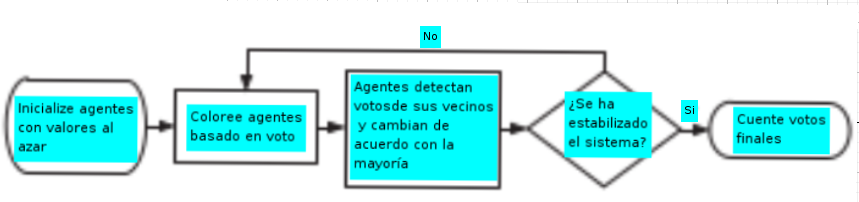
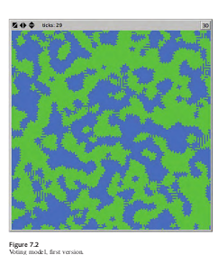
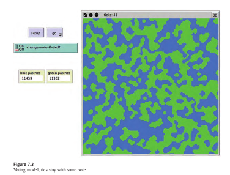
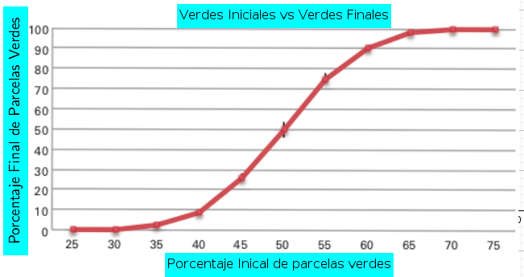
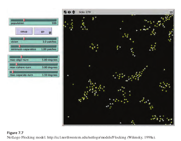

10 Verificación, Validación Replicación
En los capítulos anteriores, hemos defendido la importancia y utilidad de los MOBAs, aprendido a extender un modelo existente y construir modelos nuevos. En este capítulo, aprenderemos a evaluar la corrección y validez de un MOBA
- ¿Cómo podemos saber si nuestro MOBA implementado corresponde a nuestro modleo conceptual?
- ¿Cómo podemos medir la correspondencia entre nuestro MOBA y el mundo real?
10.1 Corrección de un modelo
Si un modelo es útil para responder preguntas del mundo real, es importante que el modelo proporcione resultados que abordan los problemas relevantes y que los resultados sean precisos, El modelo debe proporcionar resultados que sean útiles para el usuario del modelo. La precisión del modelo puede ser evaluado a través de tres procesos diferentes:
- Validación, Verificación y Réplicación.
La validación del modelo es el proceso de determinar si el modelo implementado corresponde a, y explica, algún fenómeno en el mundo real. Verificación del modelo es el proceso de determinar si un modelo implementado corresponde al modelo conceptual que se uso para su construcción, este proceso es equivalente a asegurarse de que el modelo ha sido implementado correctamente. Por último, la replicación es la coherencia entre el modelo original y un modelo implementado por un investigador o Grupo de investigadores distinto. Al garantizar que un modelo implementado corresponde a un modelo conceptual (verificación) cuyas salidas se reflejan en el mundo real (validación), la confianza crece en la corrección y el poder explicativo de los modelos. Además, mientras otros científicos y constructores de modelos replican el trabajo original, la comunidad científica específica en su conjunto es la que llega a aceptar el modelo como correcto. Verificación validación y replicación sustentan colectivamente la corrección y, por lo tanto, la utilidad de un modelo.
Sin embargo, demostrar que un conjunto particular de resultados de un modelo corresponde al mundo real no es suficiente. Como se discutió en capítulos anteriores, debido a la naturaleza estocástica de los MOBAs, a menudo se necesitan múltiples ejecuciones para confirmar que un modelo es exacto.Por lo tanto, las metodologías de verificación, validación y replicación a menudo se basan en métodos de estadística. Comenzamos nuestra discusión mirando más de cerca la verificación.
10.2 Verificación
A medida que un modelo basado en agentes crece, se hace más difícil simplemente mirar su código para determinar si realmente está llevando a cabo su función prevista. El proceso de verificación aborda este problema, teniendo como objetivo la eliminación de “errores” del código.Sin embargo, esto no es tan simple como puede parecer, y si los diseñadores e implementadores de modelos son personas diferentes, el proceso de depuración puede volverse mucho más complejo. Si un modelo es simple para empezar, es más fácil de verificar que un modelo complejo. Igualmente, si las partes adicionales agregadas al modelo también son de naturaleza incremental , construyendo hacia la pregunta de interés en vez de tratar de desarrollar totalmente el modelo, estos modelos serán más fáciles de verificar. Aun así, debe tenerse en cuenta que incluso si todos los componentes de un modelo son verificados, el modelo en sí puede no serlo, ya que pueden surgir complicaciones adicionales en las interacciones entre los componentes del modelo. A lo largo de esta sección, examinamos el tema de la verificación en el contexto de un simple MOBA del comportamiento de un sistema de votación, utilizaremos la siguiente narrativa ficticia para guiar nuestra discusión:
Imagine que se nos acerca un grupo de politólogos que desean desarrollar un modelo simple de comportamiento de votación. Ellos explican que piensan que las interacciones sociales son las que determinan en gran medida la votación en las elecciones. Con base en sus observaciones de encuestas y resultados electorales, piensan que las personas tienen alguna inclinación inicial de votación, y cuando son encuestados inicialmente, expresan esos sentimientos. Sin embargo, en el intervalo entre cuando son encuestados y cuando realmente emiten su voto, hablan con sus vecinos y colegas y discuten la forma en que planean votar; esto puede cambiar la forma en que deciden votar. De hecho, esto puede suceder varias veces durante el período previo a una elección. Los politólogos nos piden que construyamos un MOBA que ilustre este fenómeno.
10.3 Comunicación
A menudo, el implementador del modelo y el autor del modelo no son la misma persona, pero esto no es siempre el caso. A veces, un equipo de personas construye un modelo, en el que una o más personas describe el modelo conceptual mientras que otros miembros del equipo realmente implementan el modelo. Esto sucede con frecuencia cuando el experto en el dominio no tiene las habilidades técnicas para crear el modelo por su cuenta. En estas situaciones, la verificación se vuelve especialmente crítica, ya que ningún individuo tiene un conocimiento completo de todas las partes del proceso de modelado. Cuando los modelos están construidos de esta manera, la comunicación es crítica para asegurar que el modelo implementado refleje correctamente el modelo conceptual del experto en el dominio. La mejor manera de verificar modelos construidos en este tipo de equipos es que el experto en el dominio (o expertos) se familiaricen con las herramientas del modelo y, asimismo, los implementadores aprendan sobre el tema del modelo. Si bien uno no puede esperar que las dos partes se conviertan en expertos en los dominios del otro,construir este terreno común es esencial para garantizar que las ideas se comuniquen de manera efectiva y el modelo refleja correctamente las intenciones de los modeladores.
Por ejemplo, en nuestro modelo de votación, sería útil que los politólogos conocieran la diferencia entre los tipos de vecindades ( Moore y von Neumann) que exiten en los modelos basados en agentes, este conocimiento les permitiría tomar decisiones informadas sobre cómo su modelo conceptual debería ser implementado. Además, ayudaría si el implementador tuviera una idea básica de cómo los mecanismos de votación se conceptualizan dentro de la disciplina de la ciencia política, ya que podría ayudarlos a darse cuenta de posibles simplificaciones para el modelo o incluso potenciales “trampas” en el modelo a medida que se implementa. Por ejemplo:
- ¿es razonable suponer que solo hay dos partidos?
- ¿es razonable suponer que el grupo de amigos de cada persona amigos no cambia durante el período de tiempo modelado en la simulación?
Cuando se trata de la comunicación del modelo conceptual, a menudo hay espacio para errores humanos y malentendidos, en una situación ideal, el autor del modelo y el implementador son la misma persona, lo que evita el tipo de errores de comunicación que pueden resultar de diferentes vocabularios y supuestos diferentes. Sin embargo, el tiempo requerido para los expertos en el dominio para aprender programación de computadora, o por el contrario, el tiempo requerido para los programadores de computadora para aprender un dominio particular, puede ser sustancial. Esto fue particularmente cierto en las décadas pasadas, cuando a menudo era inviable convertirse en un implementador de modelos yun experto. Sin embargo, los nuevos lenguajes de MOBAs de bajo umbral, como NetLogo, tienen un objetivo explícito de disminuir la cantidad de tiempo necesario para aprender a escribir MOBAs, por lo tanto reducir (o eliminar) la brecha entre el autor y el implementador.
10.4 Descripción de Modelos Conceptuales
A medida que comenzamos a implementar el modelo de votación, podemos darnos cuenta de que hay algunos mecanismos y propiedades de agentes que no entendimos completamente cuando hablamos con los politólogos. Para aliviar este problema, se decide escribir un documento que describa cómo planeamos implementar el modelo para que podamos verificar que nosotros y los expertos en ciencia política tienen el mismo modelo conceptual en mente. Este documento servirá como un documento más formal.
10.4.1 Descripción del modelo conceptual.
Una forma de describir modelos conceptuales en términos más formales es usar diagramas de flujo. Un diagrama de flujo es una descripción gráfica del modelo que describe el flujo de decisiones que ocurren durante la ejecución de un procedimiento de software. Para el modelo conceptual descrito arriba, podríamos usar un diagrama de flujo como el de la siguiente figura.

Los diagramas de flujo usan cuadrados redondeados para indicar los estados de inicio y final del ssitema, cuadrados para indicar procesos y diamantes para indicar puntos de decisión en el código. Estos símbolos proporcionan una forma clara de entender cómo fluye el control a través del software. También podemos tomar de diagrama de flujo y reescribirlo en pseudocódigo. El objetivo es servir como punto intermedio entre el lenguaje natural y el programa formal.El pseudocódigo puede ser leído por cualquier persona, independientemente de su conocimiento de programación, mientras que, al mismo tiempo, contiene una estructura algorítmica que lo hace más fácil para implementar directamente en código real. Por ejemplo, al describir el modelo de votación, podríamos usar un pseudocódigo como este:
Los votantes tienen votos = {0, 1}
Para cada votante:
Establezca el voto 0 o 1, elegido con igual probabilidad
Loop hasta la elección
Para cada votante
Si la mayoría de los votos de los vecinos = 1 y voto = 0, establezca el voto 1
De lo contrario, si la mayoría de los votos de los vecinos = 0 y voto = 1, establezca el voto 0
Si voto = 1: establece el color azul
De lo contrario: color = verde
Mostrar recuento de votantes con voto = 1
Mostrar recuento de votantes con voto = 0
Bucle final10.5 Verification Testing
Después de diseñar el modelo conceptual con nuestros colegas de ciencias políticas, podemos comenzar la codificación. Seguimos el principio de diseño central de MOBA y comenzamos a verificar de forma simple e incremental. La alineación entre nuestro modelo conceptual y el código. Por ejemplo, podemos escribir el procedimiento de configuración, como aquí:
patches-own
[
vote ;; my vote (0 or 1)
total ;; sum of votes around me
]
to setup
clear-all
ask patches [
if (random
[ set vote
]
ask patches [
if (random 2 =
[ set vote
]
ask patches [
recolor-patch
]
end
2 = 0) ;; half a chance of this
1 ]
0) ;; half a chance of this
0 ]
to recolor-patch ;; patch procedure
ifelse vote = 0
[ set pcolor green ]
[ set pcolor blue ]
end
Luego podemos escribir una pequeña prueba que examine si el código creó el número correcto de votantes verdes y azules. En el estado inicial del modelo de votación, el número de votantes con voto 0 debería ser aproximadamente igual al número de votantes con voto 1. Podemos verificar esto fácilmente al configurar nuestro modelo varias veces, comparando los recuentos de cada voto. Si la diferencia en estas muchas configuraciones es más de aproximadamente el 10 por ciento, por ejemplo, nuestro código podría tener un error. Si la diferencia es inferior al 10 por ciento del número total, podemos sentir relativamente confiamos en que las poblaciones se generan como pretendíamos. Este código se vería así:
to check-setup
let diff abs ( count patches with [ vote = 0 ] - count patches
with [ vote = 1 ] )
if diff > .1 * count patches [
print "Warning: Difference in initial voters is greater than 10 4 %."
]
end
Podemos insertar una llamada a CHECK-SETUP en la parte inferior del procedimiento de “setup” Esta prueba luego se ejecutará cada vez que el modelo ejecute setup" y, si hay un problema, alertará quien está ejecutando el modelo y si hay un desequilibrio de votación. Usando este procedimiento de setup, la advertencia aparece casi cada vez que ejecutamos el modelo, lo que nos dice que el código no está logrando lo que pretendíamos. Además, es visualmente evidente que este código crea muchos más parcelas que son verdes (voto = 0) que azules(voto = 1). Debido a que todos los errores no son aparentes visualmente, es importante escribir pruebas de verificación (Se alienta a los lectores a examinar el código de configuración anterior y determinar su falla). Después de descubrir el error, podemos reescribir el procedimiento de configuración con lo siguiente (más simple) código, que logra el equilibrio correcto de los votantes iniciales.
to setup
clear-all
ask patches [
set vote random 2
]
ask patches [
recolor-patch
]
check-setup
end
Esta técnica de verificación es una forma de prueba unitaria, es un enfoque que implica escribir pequeñas pruebas que verifican si las unidades individuales funcionan correctamente en el código. Al escribir pruebas unitarias a medida que desarrollamos nuestro código, podemos asegurarnos de que los cambios futuros en nuestro código no interrumpan el código anterior. Dado que esta prueba unitaria se ejecutará cada vez que ejecutemos este modelo, garantiza que podamos modificar el código sin temor a que nuestros cambios alteren indetectable el código anterior. Por supuesto, esta es solo una prueba unitaria, y hay muchas más que podrían escribirse. También es posible escribir por separado un conjunto de pruebas unitarias que no forman parte del modelo implementado, sino que están escritas para ejecutar el modelo con entradas particulares y comprobar si las salidas corresponden a los resultados esperados. Este enfoque a veces se denomina prueba unitaria “fuera de línea”. Después de estar seguros de que se verifica el código de setup, se puede comenzar un proceso similar para el procedimiento go" Traducimos el pseudocódigo en NetLogo de la siguiente manera:
to go
ask patches [
set total (sum [vote] of neighbors)
]
;; this is equivalent to count neighbors with [vote = 1]
;; use two ask patches blocks so all patches compute "total"
;; before any patches change their votes
ask patches [
ifelse vote = 0 and total >= 4 [
set vote 1
]
[if vote = 1 and total <= 4 ] [
[set vote 0
]
recolor-patch
]
tick
endEn este código, primero pedimos a las parcelas que calculen el número total de vecinos con voto= 1. Si la parcela está votando 0 y tiene un total mayor o igual a 4, entonces cambia su votación a 1. Del mismo modo, si la parcela está votando 1 y tiene un total menor o igual a 4, cambia su voto a 0. Después de verificar los procedimientos SETUP y GO, podemos comenzar a investigar los resultados del modelo
10.6 Más allá de la verificación
A pesar de los mejores esfuerzos para verificar que el modelo implementado corresponde al modelo conceptual, a veces producirá resultados que no parecen corresponder a lo que los implementadores y los autores planearon. Con el tiempo, puede quedar claro que no hay “error” en el modelo, sino que los resultados emergentes y sorprendentes del modelo son consecuencias no deseadas de decisiones a nivel individual que el modelador tiene codificado.

Por ejemplo, después de codificar el modelo anterior, presentamos los resultados a nuestros colegas de ciencia política, los resultados del modelo confunden a los politólogos, porque esperaban que el modelo uniera a los votantes formando bloques estáticos con bordes suaves, en lugar de bordes irregulares que aparecen en la figura. De hecho, este modelo nunca alcanza el equilibrio; Continuamente recorre un conjunto de estados, después de un examen más detallado, queda claro que lo que está causando el ciclo del modelo y produce los bordes dentados es cuando los votos de los vecinos están empatados. Como lo codificamos, el modelo hace que los votantes cambien su voto, entonces los bordes siguen yendo y viniendo entre los dos votos. Podemos cambiar el modelo para que los votantes no cambien su voto si los votos de sus vecinos están empatados. Después de hacer esto , los bloques se unen con bordes lisos:

Sin embargo, como los políticos se han interesado en cómo un cambio aparentemente pequeño crea una gran diferencia en el resultado, deciden hacer de este un elemento del modelo que puedan controlar agregando un interruptor, llamado CAMBIAR-VOT0-SI-EMPATE?. Tener esta opción como elemento controlable nos permite explorar nuevos comportamientos de votación, por ejemplo:
- ¿qué pasaría si los votantes decidieran ponerse del lado del partido minoritario en su barrio?
Es decir, imagine una comunidad donde, cuando los vecinos de un miembro están divididos estrechamente entre dos candidatos, el miembro decide votar por el desvalido (quien quiera que haga que la mayoría de sus vecinos no voten), ya que el miembro podría ser capaz de asegurar la victoria del desvalido. Tenga en cuenta que esta perversidad hipotética de los agentes puede no reflejar las prácticas de votación del mundo real. Sin embargo, esta es una cuestión de validación del modelo (que discutiremos más adelante), en lugar de un problema de verificación. A continuación se muestra el código para el procedimiento go con las dos opciones agregadas:
to go
ask patches
[ set total (sum [vote] of neighbors) ]
;; use two ask patches blocks so all patches compute "total"
;; before any patches change their votes
ask patches
[
if total > 5 [ set vote 1 ]
if total < 3 [ set vote 0 ]
if total = 4
[ if change-vote-if-tied?
[ set vote (1 - vote) ] ] ;; switch vote
if total = 5
[ ifelse award-close-calls-to-loser?
[ set vote 0 ]
[ set vote 1 ] ]
if total = 3
[ ifelse award-close-calls-to-loser?
[ set vote 1 ]
[ set vote 0 ] ]
recolor-patch ]
tick
end
Este ejemplo ilustra que, al examinar los resultados del modelo, puede ser difícil descifrar si el resultado de un modelo es el resultado de errores en el código, una falta de comunicación entre el autor del modelo y el implementador, o un resultado “correcto” pero no anticipado de las reglas de los agentes. Por lo tanto, es vital que el implementador del modelo y el autor del modelo discutan ambos la modelación de las reglas y los resultados con la mayor frecuencia y regularidad posible, y no simplemente cuando finalice la implementación del modelo. Saltarse este proceso de comunicación puede resultar en que el implementador termine creando un modelo con comportamientos de agentes que el autor del modelo no había definido. Sin embargo, al mantener estas comunicaciones, el autor del modelo puede descubrir que las variantes en su modelo conceptual resultan en resultados dramáticamente diferentes. Incluso si el autor y el implementador del modelo son la misma persona, es útil revisar las reglas del modelo y los resultados de forma iterativa y discutirlos con personas que están familiarizadas con el fenómeno modelado.
10.7 Análisis de sensibilidad y robustez
Después de que hayamos terminado de construir un modelo y encontrado algunos resultados interesantes, es importante explorar estos resultados para determinar qué tan sensible es nuestro modelo al conjunto particular de condiciones iniciales que estamos usando. A veces, esto solo significa variar un grupo de parámetros que ya tenemos dentro de nuestro modelo, pero otras veces, esto implica agregar nuevos parámetros al modelo. Este proceso, llamado análisis de sensibilidad, crea una comprensión de cuán sensible (o robusto) es el modelo a varias condiciones. Un tipo de análisis de sensibilidad implica alterar los valores de entrada del modelo. Por ejemplo, uno de los politólogos está preocupado por las condiciones iniciales del modelo, piensa que el comportamiento actual del modelo puede depender inicialmente de tener un equilibrio entre el número de votantes para cada partido (color). y se pregunta si inclinar el estado inicial en una dirección u otra daría como resultado que un color domine el paisaje. Para probar esta hipótesis, creamos un parámetro (un deslizados en la interfaz del modelo) que controla el porcentaje de agentes verdes en el estado inicial del modelo. Usando El Analizador de Comportamiento C.1, ejecutamos un conjunto de experimentos donde variamos este porcentaje del 25 por ciento al 75 por ciento en incrementos del 5 por ciento. Al establecer la condición de parada para este experimento, debemos tener en cuenta que es posible tener patrones oscilantes interminables. Por esta razón, decidimos establecer dos condiciones de parada diferentes:
- el modelo se detiene si ningún votante cambió de votos en el último tick.
- el modelo se detendrá después de que se han ejecutado cien pasos de tiempo (ticks), ya que parece ser tiempo suficiente para llegar a un estado final del modelo. Esta investigación significará que tenemos que reevaluar nuestro proceso de verificación inicial, ya que ahora estamos deliberadamente alterando completamente la distribución inicial. Por lo tanto, podemos cambiar el código para que tome en cuenta el nuevo parámetro:
to check-setup
let expected-green (count patches * initial-green-pct / 100)
let diff-green (count patches with [ vote = 0 ] ) - expected-green
if diff-green > (.1 * expected-green) [
print "Initial number of green voters is more than expected.”
]
if diff-green < (- .1 * expected-green) [
print “Initial number of green voters is less than expected.”
]
endPodemos examinar la relación entre la distribución inicial de votantes y el recuento final de votos haciendo diez ejecuciones para cada porcentaje inicial.Cada partido político debe contar el porcentaje de votantes finales que son verdes o azules.Después de ejecutar nuestro experimento BehaviorSpace, podemos graficas los resultados del porcentaje final contra el porcentaje de entrada, obteniendo el gráfico siguiente:

Estos resultados muestran que, a medida que nos alejamos de una distribución media inicial de votantes azules y media de votantes verdes, hay un efecto no lineal en la distribución final de los votantes. El modelo es sensible a estos parámetros, y por lo tanto, un ligero cambio en el número inicial de votantes de un partido dan como resultado un mayor número de votantes finales para ese mismo partido. Sin embargo,la definición de “sensibilidad” depende de los resultados del modelo que se esté considerando.Por ejemplo, la sensibilidad en los resultados cuantitativos no significa necesariamente que habrá sensibilidad en los resultados cualitativos. Si el resultado de su modelo principal es el hallazgo cualitativo de que se forman islas sólidas de votantes de ambos colores, dejando la segregación, entonces este resultado cualitativo sigue siendo cierto incluso si se perturba la distribución inicial de los votantes en un 10 por ciento en cualquier dirección.
Cuando están perturbadas, las islas de un color u otro pueden ser mucho más pequeñas, pero aún habrá bloques sólidos. Por lo tanto, para esta medida cualitativa, podríamos cocluir que este modelo es insensible a pequeños cambios en la configuración inicial de votantes. El análisis de sensibilidad es un examen del impacto de diferentes parámetros del modelo en sus resultados. Para determinar qué tan sensible es un modelo, examinamos el efecto que diferentes condiciones iniciales y los mecanismos del agente tienen en los resultados del modelo. Además, podemos examinar el entorno en el que opera el modelo. Por ejemplo, en el modelo de votación, estamos usando una cuadrícula bidimensional, pero estos resultados podrían cambiar drásticamente si los votantes se ubicaron en una cuadrícula hexagonal,en una red o en alguna otra topología.
10.8 Beneficios de la verificación
Existen muchos beneficios al realizar análisis de verificación, que incluyen el desarrollo de una comprensión de la causa de resultados inesperados y una exploración del impacto de los pequeños cambios en las reglas de un modelo, el nivel básico de verificación es que el implementador del modelo compare la descripción conceptual del modelo con el código implementado para determinar si el modelo implementado corresponde al modelo conceptual. Cuanto más riguroso sea el proceso de verificación del modelo, es más probable que el modelo implementado resultante corresponda al modelo conceptual. Si los dos modelos corresponden exactamente, entonces el modelador y los autores entienden las reglas del modelo. Esto significa que entienden cómo el modelo genera sus resultados. Aún así, comprender los componentes del modelo no garantiza una comprensión de todas las interacciones de estos componentes o de por qué el modelo genera los resultados. La verificación es importante porque ayuda a garantizar que el autor (o autores) entiendan los mecanismos que subyacen el fenómeno que se está explorando. Sin pasar por este proceso, los autores no pueden confiar en las conclusiones extraídas del modelo.La verificación puede ser difícil de lograr porque es difícil determinar si un resultado inesperado es el producto de un error en el código, una falta de comunicación entre el autor e implementador del modelo, o un resultado inesperado de una regla, además aún puede ser difícil aislar y eliminar un error, o corregir el error incluso si estamos seguros de que el resultado es una consecuencia inesperada pero precisa, Puede ser difícil descubrir qué causó que los resultados fueran diferentes de lo esperado. El proceso de comprender cómo funciona un modelo también puede ayudarnos a comprender la pregunta de “por qué”. Por ejemplo, en el modelo anterior, como examinan los politólogos en el modelo, comienzan a comprender la razón por la que el segundo modelo se une en bloques. Al pensar en las reglas del modelo desde el punto de vista del agente, queda claro que una vez que se forma un bloque de individuos permanecerá constante, mientras que si la mayoría de un los vecinos del agente votan de una manera y ninguno de ellos está cambiando, entonces el agente lo hará seguir votando de la misma manera. Por lo tanto, una vez que todos los agentes hayan alcanzado la el concenso mayoritario de sus vecinos, se quedarán así para siempre. Es solo cuando damos a los agentes la capacidad de cambiar colores según los vecinos que los rodean, como en las otras dos reglas, que vemos un cambio perpetuo en los resultados. El proceso de verificación no es binario. Un modelo no está verificado o no verificado, pero más bien existe a lo largo de un continuo de verificación. Siempre es posible escribir más pruebas de o realizar más análisis de sensibilidad. Por lo tanto, depende del autor del modelo y implementador (y más tarde un replicador de modelos) para decidir cuándo terminar la verificación
10.9 Validación
La validación es el proceso de asegurar que haya una correspondencia entre el modelo implementado y realidad. La validación, por su naturaleza, es compleja, multinivel y relativa. Los modelos son simplificaciones de la realidad; Es imposible que un modelo exhiba las mismas características y patrones que existen en la realidad. Al crear un modelo, queremos incorporar los aspectos de la realidad que sean pertinentes a nuestras preguntas. Así, cuando se emprende un proceso de validación, es importante tener en cuenta las preguntas del modelo conceptual y validar aspectos del modelo que se relacionan con estas preguntas.Hay dos ejes diferentes para considerar los problemas de validación (Rand & Rust, 2011). El primer eje es el nivel en el que se produce el proceso de validación (Microvalidación) es asegurarse de que los comportamientos y mecanismos codificados en los agentes del modelo coinciden con sus análogos del mundo real. La Macrovalidación es el proceso de asegurar que las propiedades agregadas y emergentes del modelo corresponden a las propiedades agregadas en el mundo real. El segundo eje de validación es el nivel de detalle del proceso de validación. La validación facial (face-validation) es el proceso de mostrar que los mecanismos y propiedades del modelo parecen mecanismos y propiedades del mundo real. La validación empírica asegura que el modelo genera datos que pueden demostrarse que corresponden a patrones similares de datos en el mundo real. Para ayudar a ilustrar el proceso de validación de un MOBA, utilizaremos el modelo Flocking de la sección de Biología de la biblioteca de modelos NetLogo. Este modelo intenta recrear patrones de aves que acuden como existen en la naturaleza :

Un modelo clásico basado en agentes basado en los modelos originales de Boids de Reynolds (1987). El modelo demuestra que pueden surgir bandadas de pájaros sin ser guiados de ninguna manera por Aves líderes especiales. Por el contrario, cada ave sigue exactamente el mismo conjunto de reglas, y de ahí las bandadas emergen. Cada ave sigue tres reglas: “alineación”, “separación” y “coherencia” * Alineación: significa que un pájaro gira para que se mueva en la misma dirección que cerca aves.
Separación: significa que un pájaro gira para evitar golpear a otro pájaro.
Cohesión: significa queun pájaro se mueve hacia otras aves cercanas.
La regla de “separación” anula las otras dos, lo que significa que si dos pájaros se acercan, siempre se separarán. En este caso, las otras dos reglas se desactivan hasta que se logra la separación mínima. las tres reglas afectan solo el rumbo del ave. Cada ave siempre avanza al mismo tiempo y con velocidad constante. Las reglas son notablemente robustas y se pueden adaptar a enjambres de insectos, colonias de peces (Stonedahl y Wilensky, 2010a). Describamos brevemente la implementación de estas tres reglas. La regla de alineación es codificada de la siguiente manera
to align
;; turtle procedure
turn-towards average-flockmate-heading max-align-turn
endEste código le dice al pájaro que gire hacia el rumbo promedio de sus compañeros de manada, pero no más que el control deslizante MAX-ALIGN-TURN, que especifica el ángulo máximo que puede girar un pájaro con el fin de alinearse con sus compañeros de rebaño. Este código requiere dos procedimientos auxiliares: uno para encontrar los compañeros de bandada de un pájaro y otro para encontrar su rumbo promedio. El primero es sencillo:
to find-flockmates ;; turtle procedure
set flockmates other turtles in-radius vision
end10.10 Replicación
Uno de los componentes fundamentales del método científico es la idea de replicación.(Latour y Woolgar, 1979). Desde este punto de vista, para que un experimento sea considerado aceptable por la comunidad científica, los científicos que originalmente realizaron el experimento deben publicar los detalles de cómo se realizó el experimento. Esta descripción puede ayudar a los equipos de científicos posteriores a realizar el experimento ellos mismos para determinar si sus resultados son lo suficientemente similares como para confirmar los resultados originales. Ese proceso confirma el hecho de que el experimento no dependía de ninguna condición local, mientras que la descripción escrita del experimento es lo suficientemente satisfactoria como para registrar el conocimiento y la ventaja obtenida en el registro permanente. La replicación es una parte importante del proceso científico y es tan importante dentro del ámbito de los modelos computacionales como lo es dentro del ámbito de los experimentos físicos. La reproducción de un experimento físico ayuda a demostrar que los resultados originales no se deben a errores o descuidos en la ejecución probando y comparando tanto la configuración experimental como los resultados posteriores. La replicación de un modelo computacional sirve para este mismo propósito. Adicionalmente, replicar un modelo computacional aumenta nuestra confianza en la verificación del modelo ya que una nueva implementación del modelo conceptual ha arrojado los mismos resultados que el original. La implementación del modelo replicado debe diferir de alguna manera del modelo original y también debe ser ejecutable (en lugar de otro modelo conceptual formal). Un modelo original y un modelo replicado asociado pueden diferir en al menos seis dimensiones: (1) tiempo, (2) hardware, (3) idiomas, (4) juegos de herramientas, (5) algoritmos y (6) autores.
Esta lista está ordenada según la probabilidad de que el esfuerzo de replicación produzca resultados diferentes del modelo original. Por lo general, más de una de estas dimensiones son consideradas en el curso de un modelo de replicación. Un modelo puede ser replicado por el mismo individuo en el mismo hardware y en el mismo kit de herramientas y entorno de lenguaje pero reescrito en un momento diferente. En este cambio es menos probable que se produzcan resultados significativamente diferentes pero, si lo hiciera, lo haría indicar que la especificación publicada es inadecuada, ya que incluso el investigador original no se pudo volver a crear el modelo a partir del modelo conceptual original. Este es la única dimensión de replicación que siempre será variada.El modelo puede ser replicado por el mismo individuo pero en diferente hardware, por un cambio en el hardware queremos decir que el modelo implementado puede correr en una máquina diferente. Los cambios de hardware también se pueden obtener replicando el modelo en una plataforma de hardware diferente. El modelo podría replicarse en un lenguaje de computadora diferente. Por un lenguaje informático, nos referimos al lenguaje de programación que se utilizó para codificar las instrucciónes en el modelo implementado. Java, Fortran, Objective-C y NetLogo son ejemplos de diferentes lenguajes, a menudo, la sintaxis y la semántica de un lenguaje tienen un efecto significativo en cómo el investigador traduce el modelo conceptual en una implementación real. Por lo tanto, la replicación en un nuevo lenguaje puede destacar las diferencias entre el modelo conceptual y la implementación. Incluso apareciendo detalles menores en lenguaje y especificaciones algorítmicas, como los detalles de punto flotante o las diferencias entre implementaciones de protocolos, pueden causar diferencias en los modelos replicados (Izquierdo y Gotts, 2005, 2006). Para que un modelo sea ampliamente aceptado como parte de la investigación científica, debe ser robusto a tales cambios. NetLogo es un ejemplo interesante porque, si bien el software de NetLogo está escrito en una combinación de Java y Scala, los modeladores usan otro lenguaje (también referido como NetLogo) para desarrollar modelos. Por lo tanto, clasificamos NetLogo como un kit de herramientas y un lenguaje. Con muchos kits de herramientas de modelado diferentes disponibles para su uso, los resultados de la replicación. pueden iluminar problemas no solo conceptuales sino también en el mismo kit de herramientas los propios, el modelo podría replicarse usando diferentes algoritmos. Por ejemplo, hay muchas formas de implementar algoritmos de búsqueda (por ejemplo, primero en amplitud, primero en profundidad) o actualizar una gran cantidad de objetos (por ejemplo, en orden de creación de objetos, en un orden aleatorio ). De hecho, un modelo replicado puede simplemente realizar los pasos de un modelo en un orden diferente al del modelo original.Todas estas diferencias pueden potencialmente crear disparidades en los resultados. Por otra parte, también es posible que la descripción algorítmica difiera, pero que los resultados no lo hagan. Esto podría suceder porque dos individuos describen el mismo algoritmo de manera diferente, o que las diferencias algorítmicas no afectan los resultados. Esto es una prueba sólida de la replicabilidad de un modelo. Si otro investigador puede tomar una descripción formal del modelo y recrearlo para producir los mismos resultados, tenemos evidencia razonable de que el modelo se describe con precisión y los resultados son robustos a los cambios.